Leukemia Treatment in Bangalore
Leukemia is a cancer of the blood that starts in the bone marrow, where blood cells are made. The marrow makes too many abnormal white blood cells, which crowd out the healthy cells your body needs. Today, many types of leukemia can be treated very well, and many can be cured, especially in children.

Overview
What is leukemia?
Your bone marrow makes three kinds of blood cells: red cells that carry oxygen, white cells that fight infection and platelets that stop bleeding. In leukemia, a change in the DNA of a young blood cell makes it grow out of control. These leukemia cells fill the bone marrow, so the body cannot make enough normal blood cells. This leads to anemia, infections and bleeding.
Leukemia is not contagious and, in most people, it is not inherited from parents.
You are not alone
Hearing the words “blood cancer” is frightening. The right diagnosis, a clear plan and an experienced team make a real difference to the outcome.
With timely leukemia treatment in Bangalore, most children with the commonest type of leukemia are alive and well years later.
Types
Types of leukemia
Doctors group leukemia by how fast it grows (acute or chronic) and by the type of white cell involved (lymphoid or myeloid).
| Type | Who it usually affects | How it is treated |
|---|---|---|
| Acute lymphoblastic leukemia (ALL) | Most common cancer in children; also seen in adults | Chemotherapy in phases for about 2 to 3 years; immunotherapy or transplant for high-risk or relapsed cases |
| Acute myeloid leukemia (AML) | More common in adults; can occur in children | Intensive chemotherapy; targeted medicines; transplant for many patients |
| Acute promyelocytic leukemia (APL) | A special type of AML | Vitamin A-based medicine (ATRA) with arsenic trioxide; one of the most curable leukemias when treated quickly |
| Chronic myeloid leukemia (CML) | Mostly adults | Daily targeted tablets (such as imatinib) that control it for years |
| Chronic lymphocytic leukemia (CLL) | Older adults | Often only regular monitoring at first; tablets or other medicines when needed |
Signs & symptoms
Signs and symptoms of leukemia
Early symptoms can look like a viral fever or simple tiredness, which is why leukemia is sometimes found on a routine blood test. Watch for:
- TirednessWeakness and pale skin
- Repeated feversFevers or infections that keep coming back
- Easy bleedingBruising, bleeding gums or frequent nosebleeds
- Skin spotsTiny red or purple spots (petechiae)
- Bone or joint painIn children, limping or refusing to walk
- Swollen glandsIn the neck, armpits or groin
- Swollen tummyFrom an enlarged liver or spleen
- Weight lossPoor appetite and night sweats
- Signs in childrenPaleness, repeated fever, unusual bruises, leg pain and tiredness that stops play
These symptoms usually have common causes, but if they last more than a week or two, a simple blood test is worth doing.
Go to a hospital immediately if there is bleeding that will not stop, a high fever with shivering, breathlessness, severe headache or confusion.
What causes leukemia? Risk factors
In most people, the exact cause is not known. Leukemia is not caused by anything a parent did or did not do. Factors that raise the risk include:
- Previous chemotherapy or radiation for another cancer
- Genetic conditions such as Down syndrome
- Long-term exposure to benzene and some industrial chemicals
- Smoking (for AML)
- Certain bone marrow disorders, such as myelodysplastic syndrome (MDS)
- A family history, mainly for CLL
When should you see a blood cancer specialist?
See a hematologist (blood cancer doctor) if:
- Your blood report shows very high or very low white cells, low platelets or abnormal (blast) cells
- You or your child has unexplained bruises, repeated fevers or bone pain with low blood counts
- A doctor suspects leukemia and you want a confirmed diagnosis and a second opinion
- Leukemia has come back after treatment, or you want to know about transplant or CAR-T
Diagnosis
How is leukemia diagnosed?
A correct and complete diagnosis decides the right treatment. Dr. Neema Bhat may advise these tests:
- 01CBC and peripheral smear
Show abnormal white cell counts and leukemia (blast) cells.
- 02Bone marrow aspiration and biopsy
A small sample from the hip bone, taken under local anesthesia or sedation, confirms leukemia.
- 03Flow cytometry
Identifies the exact type, such as B-cell ALL, T-cell ALL or AML.
- 04Cytogenetic and molecular tests
Find gene changes (such as the Philadelphia chromosome) that guide treatment and predict outcome.
- 05Lumbar puncture
Checks whether leukemia cells have reached the brain and spinal fluid, mainly in ALL.
- 06Other tests
Imaging, heart checks before chemotherapy, and HLA typing of the family if a transplant may be needed.
Treatment
Leukemia treatment options
Your leukemia treatment in Bangalore depends on the type of leukemia, its gene changes, the patient’s age and overall health. Treatment is planned to destroy the leukemia cells and let the bone marrow make healthy blood again.
Chemotherapy
Chemotherapy is given in planned phases. Induction (about 4 to 6 weeks) aims to clear leukemia from the bone marrow, a state called remission. Consolidation removes any remaining cells. For ALL, a long maintenance phase of mostly oral tablets follows, so total treatment lasts about 2 to 3 years. Medicine is also given into the spinal fluid to protect the brain.
Targeted therapy
Targeted medicines attack a specific change in the leukemia cells — tablets such as imatinib and dasatinib for CML and Philadelphia-positive ALL, and ATRA with arsenic trioxide for APL. Many patients with CML only need daily tablets and regular blood tests.
Immunotherapy and CAR-T cell therapy
Antibody medicines help the immune system find and kill leukemia cells, mainly in ALL that has come back. In CAR-T therapy, the patient’s own immune cells are trained in a lab to attack the cancer. India approved its own CAR-T therapy in 2023 for some relapsed B-cell blood cancers, at a fraction of the cost abroad.
Bone marrow (stem cell) transplant
A transplant replaces diseased marrow with healthy stem cells from a donor. It is advised for high-risk AML, ALL that has come back, and some other cases. The donor can be a fully matched brother or sister, a matched unrelated donor from a registry, or a half-matched family member. Learn more
Supportive care
- Blood and platelet transfusions during low-count periods
- Quick treatment of fever and infections with antibiotics
- Nutrition support and anti-nausea medicines
- Fertility preservation advice for teenagers and adults before treatment starts
Outlook
Is leukemia curable? Success rates
Yes, many types of leukemia can be cured or controlled for many years. Results depend on the type, its gene changes, age and how well the leukemia responds to the first phase of treatment.
- Childhood ALL
A large Indian study of 2,695 children found that 73 to 88 out of 100 were alive four years after treatment, depending on their risk group (Lancet Regional Health, Southeast Asia, 2025).
- APL
One of the most curable leukemias when diagnosed and treated without delay.
- CML
Most people on daily targeted tablets live long, active lives.
- AML
Harder to treat, but outcomes improve with the right chemotherapy and a transplant when needed.
Cost of leukemia treatment in Bangalore
The cost depends on the type of leukemia, the treatment plan and the length of hospital stay:
- Chemotherapy for ALL: spread over 2 to 3 years, with the highest costs in the first few months.
- AML: intensive chemotherapy needs longer hospital stays, so costs are higher.
- CML: mainly the ongoing cost of daily tablets and blood tests.
- Bone marrow transplant: a one-time cost that depends on the donor type.
- CAR-T therapy: about ₹30 to 35 lakh in India, compared with about ₹3.3 crore in the US.
The clinic can give you a personalised estimate after the first consultation.
Financial help
- Ayushman Bharat PM-JAY: covers cancer care, including medical oncology and bone marrow transplants, up to ₹5 lakh per family per year for eligible families.
- Insurance: most health insurance plans cover chemotherapy and transplant; the team helps with pre-authorisation.
- NGOs and CSR funds: several charities support children with leukemia during treatment. The team can guide you to them.
Life during and after leukemia treatment
- Call the team at once if you get a fever (38°C or higher) during chemotherapy. With low white cells, infections can become serious quickly.
- Wash hands often, avoid crowds and eat freshly cooked food during low-count periods.
- Hair loss from chemotherapy is temporary; hair grows back after treatment.
- Children can usually return to school once the intensive phase is over.
- After treatment, regular check-ups and blood tests watch for relapse and long-term effects.

About the doctor
Dr. Neema Bhat
- SpecialityHematologist, Pediatric Oncologist & Bone Marrow Transplant Specialist
- EducationMD (USA) · Fellowship (FAAP) in Pediatric Hematology, Oncology & Bone Marrow Transplantation, Penn State Health, USA
Dr. Neema Bhat is a Haemato-Oncologist in Bangalore with more than ten years of experience treating blood disorders and blood cancers in children and adults. For leukemia, she plans every step — diagnosis, chemotherapy, targeted medicines and transplant — for children and adults.
FAQs
Quick answers to the questions patients and families ask most about leukemia.
01Is leukemia curable?
Many types are. Most children with ALL and most people with APL can be cured, and CML can be controlled for many years with daily tablets. AML is harder to treat, but a transplant improves the chances of cure.
02Can leukemia in children be cured?
Yes. Childhood ALL is one of the most treatable childhood cancers. In a large Indian study, 73 to 88 out of 100 children were alive four years after treatment, depending on their risk group.
03What is the most effective treatment for leukemia?
It depends on the type. Chemotherapy is the main treatment for ALL and AML, targeted tablets for CML, ATRA with arsenic for APL, and a bone marrow transplant for high-risk or relapsed leukemia.
04How long does leukemia treatment take?
ALL treatment takes about 2 to 3 years, though most of it is oral tablets at home after the first months. AML treatment usually takes about 6 months. CML tablets are taken long term.
05Can leukemia be treated without chemotherapy?
Some types can. CML is treated with targeted tablets, APL mainly with ATRA and arsenic, and early CLL may only need monitoring. ALL and AML usually need chemotherapy.
06Will chemotherapy cause hair loss?
Many chemotherapy medicines cause hair loss, but it is temporary. Hair usually grows back within a few months after treatment.
07Can leukemia come back after treatment?
Sometimes. That is why regular follow-up and blood tests continue after treatment. If it comes back, options include more chemotherapy, immunotherapy, CAR-T or a transplant.
08Which doctor treats leukemia?
A hematologist or hemato-oncologist, a blood cancer specialist, treats leukemia. Dr. Neema Bhat is a US-trained hematologist in Bangalore who treats leukemia in children and adults.
09What is the leukemia treatment cost in India?
It varies with the type and plan. CML needs ongoing tablet costs, ALL treatment is spread over 2 to 3 years, and transplants and CAR-T cost more. PM-JAY and health insurance cover many of these treatments.
10Is leukemia hereditary?
Usually not. Most leukemias are caused by gene changes that happen during a person’s life, not ones passed down from parents. Leukemia is also not contagious.
Early expert care matters
If you or your child has an abnormal blood report or a leukemia diagnosis, book a consultation for leukemia treatment in Bangalore with Dr. Neema Bhat for a clear diagnosis, a personalised plan and a second opinion if you need one.
- +91 78997 56677 · Call or WhatsApp
Medical disclaimer: This page is for general information only and is not a substitute for medical advice. Please consult a doctor for diagnosis and treatment.